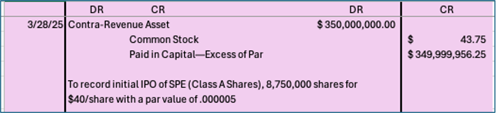
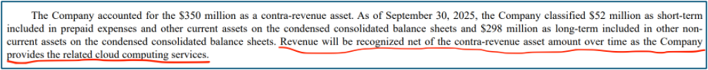
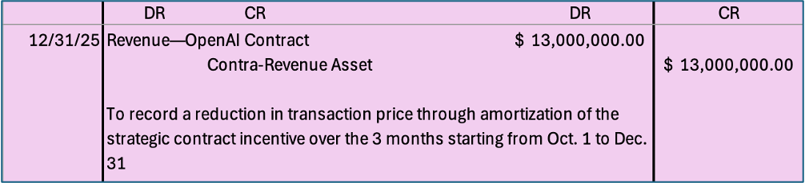
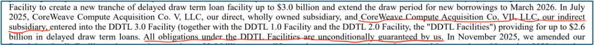
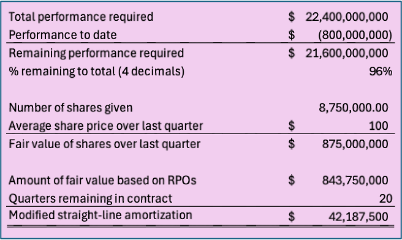
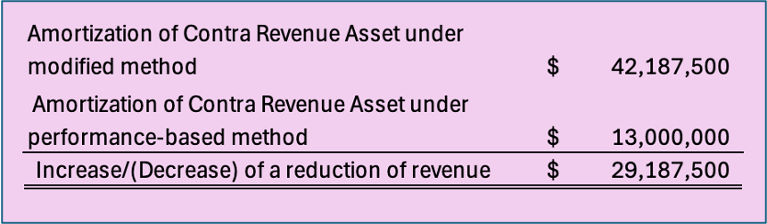
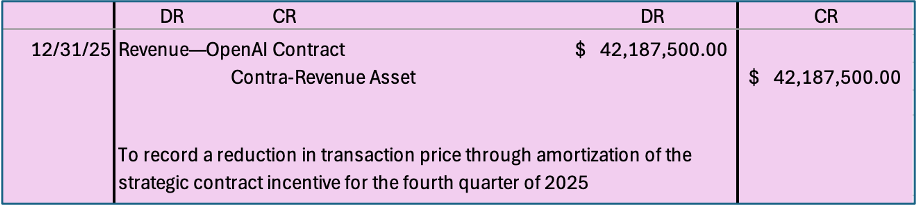

—Written by Chris McFarland
December 18, 2025
Commentary last added on N/A
Introduction:
As the year comes to a close, the AI trade remains at the center of Wall Street’s attention. Investors are wondering whether the recent pullbacks in many core AI stocks, such as CoreWeave, Oracle, and Palantir, are cases of profit-taking or concern over skyrocketing valuations backed by increasingly intertwined financing deals. These financing arrangements are not only fascinating those in the finance world, but the accounting world as well.
In this article, we will take a look at how CoreWeave accounts for its all-important contract with OpenAI that was initially announced earlier this year, right before their IPO. CoreWeave is interesting to study because, since they made their initial public offering in 2025, the only audited financial statement they have given to shareholders was the S-1, which is an initial standing of a company before its IPO. Other than that, stakeholders have only received unaudited Form 10-Qs.
Background:
The deal in question is very complex and goes like this: CoreWeave will receive up to $22.4 billion from OpenAI for providing access to their network of datacenters and AI infrastructure. The infrastructure that will be used to satisfy the performance obligations will be housed within a special purpose vehicle (SPV), called CoreWeave Compute Acquisition Co., VII LLC. The initial funding of the SPE came from Class A shares issued during the IPO of CoreWeave Inc. (the main company). Per the Master Services Agreement, OpenAI was given a $350 million stake in CoreWeave free of charge. Additionally, OpenAI holds the right to place a lien on the security interest of the SPV in the case of CoreWeave’s SPE defaulting on its debt. Let’s just say, this is not your grandma’s financing arrangement!
Accounting Treatment:
So, how did they recognize this on their financial statements? I give you…the “Contra-Revenue Asset.” CoreWeave believes that this component of the deal is an asset that should be amortized over the course of the contract performance, being netted against revenue. Think of it as similar to when a company prepays for a future expense. No liability do they associate with this component of the deal. That’s not to say that there are no liabilities associated with the rest of the contract. Naturally, they will recognize prepayments from OpenAI as deferred revenue, or “contract liabilities” as other industries with long-term contracts call it. The liability emerges when performance lags receipts.
The best way to appreciate how beneficial this accounting treatment is for CoreWeave is to show what the entries look like on their end. Starting with the initial IPO of the company back in March of 2025, CoreWeave would have recognized a debit to a contra-revenue asset and a credit to equity. You may be asking why the initial debit does not involve cash. This is because no cash was given; it was a non-cash transaction. See Exhibit 1.
Exhibit 1: Journal Entry

Exhibit 2: Disclosure of Amortization Method in Form 10-Q for September 30, 2025

Exhibit 3: Journal Entry—If the $52 mil. of expected performance was proportionately spread out over each quarter of the year, starting and ending Sep. 30, 2025, and Sep. 30, 2026, respectively—used for simplicity

Result:
By showing the journal entries, it can be seen that CoreWeave is essentially paying for an increase to its own equity. Even though the asset will be brought down to zero and the initial increase in equity will be offset by subsequent reductions in revenue, the initial asset and equity amounts recognized become very important when meeting leverage ratios set by lenders. Rapidly growing companies such as CoreWeave rely on low costs of capital to fulfill long-term promises. Even though it may seem like an antiquated profession, accounting is on the minds of every artificial intelligence hyper-scaler.
Examination of Accounting Treatment:
For this specific situation, the only way an asset can be recorded is if equity is coexisting on the other side of the accounting equation—assets equal liabilities plus stockholders’ equity. Therefore, it is crucial to pay attention to authoritative GAAP on variable interest entity (VIE) consolidation testing in section 810 of the codification. Under section 810, GAAP specifies that a corporation must consolidate an SPV (what the FASB calls a VIE) if the corporation is the primary beneficiary of the VIE. This means that the corporation (1) has the power to direct the VIE's activities that most significantly impact its economic performance, and (2) has the obligation to absorb significant losses and receive benefits that could result from the VIE’s future operations.
CoreWeave can clearly direct the activities of its VIEs because they “wholly own” the voting rights of the vehicles, whether through a wholly owned intermediary (indirect) or through CoreWeave Inc. (directly). The second criterion can get hairy, given that the isolated operations of the VIE imply that significant losses could only occur from a breach of contract (failing to fulfill performance obligations), in which case, the security interest on the equity of the SPV would be transferred to OpenAI (the lien). However, in this case, CoreWeave states that it unconditionally guarantees all of its SPVs, meaning even after OpenAI were to control CoreWeave Compute Acquisition Co. VII LLC’s (the SPV) assets, CoreWeave holds all responsibility for repaying creditors, and therefore absorbing losses. See Exhibit 4.
Exhibit 4: Found in the Form 10-Q for September 30, 2025

Guidance on SPV accounting has been much improved over the years, and I feel it properly handles and defines the thresholds for consolidation, of which CoreWeave has clearly followed. Furthermore, changing the amount of equity recognized throughout the contract would not only be uncharacteristic but costly due to the many adjustments that would have to follow to properly reflect the updated share of assets and liabilities. Therefore, an alternative treatment aimed at reducing the massively beneficial effects this type of financing arrangement gives the seller must involve the reduction-of-revenue method that amortizes the contra-revenue asset. While current guidance located in 606-10-32-27 of the codification states that the seller should recognize the reduction of revenue when (or as) the later of when they perform services, or are paid by the customer, I believe significant contracts could be accounted for differently.
Alternative Accounting Treatment:
When share-based consideration is given to a customer as part of a significant contract in which the seller is involved, the asset created should be amortized at a quarterly revised rate that offsets the potential short-term benefits that a customer can receive in the equity markets after a contract announcement, resulting in agreements that may lead a seller to book revenue for an amount that is higher than if consideration was given in a non-share-based form. In other words, a contra-revenue asset (created in the initial entry when equity is given) unequally benefits the seller in the beginning of a contract when remaining performance obligations (RPOs) are greatest and when the equity and asset created artificially benefit financial ratios that assist in lowering the cost of capital, which often precedes much of the performance specified in long-term, modern contracts. A new approach may include two parts— (1) a materialty test and (2) a measurement calculation.
Step 1: Materiality Test:
- Are the remaining performance obligations (RPOs) under the contract >5% of total, company-wide RPOs?
- If no, apply guidance from 606-10-32-27 (Current guidelines), and 606-10-10-2 (Overall revenue objective)
- If yes, go to step 2.
- Materiality tests should be conducted every quarter because the materiality of a contract, which is based on other contracts that the company is involved in, will continuously change.
Step 2: Measurement Calculation:
- The change in the transaction price over the life of the contract will be measured through a modified, accelerated amortization of the asset created from the share-based consideration payable to a customer. This method will either result in a reduction of revenue in the event of the company’s stock price increasing, or a minimum recognition of the standard performance-following reduction-of-revenue method in the event of a company’s stock price decreasing.
- The calculation will be as follows: See Exhibit 5.
- The effect of the modified amortization can be shown when comparing Exhibits 3 and 5. See Exhibit 6.
- For private entities, annual fair value appraisals will be substituted for stock prices. Appropriately, all guidance above containing quarterly values can be changed to annual values for private entities. Quarterly amortization entries for these entities will stay constant between each annual revision. For entities switching from private to public, the IPO price can and should be used.
- The entry would be as follows: See Exhibit 7.
- The same guidance applies to other forms of share-based consideration, including stock warrants and options that have reasonable performance conditions that are likely to be met.
Exhibit 5: Journal Entry—Hypothetical figures are used for ease of illustration

Exhibit 6: Reduction of Revenue Comparison

Exhibit 7: Journal Entry

Result:
As one can see from the exhibits above, the hypothetical figures used to mimic what the CoreWeave-OpenAI contract might play out like drastically increase the amortization of the contra-revenue asset and the reduction of revenue for the fourth quarter of 2025. This would be the case regardless of whether a customer has a lien on the security interest of an SPV that the contract controls, like in OpenAI’s case. I believe this change is fair because when sellers do not achieve large increases in their stock prices or annual fair market appraisals (for private entities), no additional reductions to revenue are made to what GAAP currently requires. Furthermore, I believe this new method focuses on the fundamental characteristic of relevance by enhancing the confirmatory value of material agreements in a cost-effective manner. The overall goal of this alternative treatment is to recognize and reduce the ability of a seller to take unfair advantage of current revenue guidelines and principles.
Conclusion:
Without a change to share-based consideration payable to customers, I believe financing arrangements like the one between CoreWeave and OpenAI will dramatically increase in use. I believe that it is up to the entire accounting world to keep pace with the rapidly intertwining deals that have taken place throughout this historic year. Opinions on fundamentals should vary; the most important part is that meaningful discussions continue to take place.
Supporting Links:
CoreWeave Form 10-Q, September 30, 2025: https://d18rn0p25nwr6d.cloudfront.net/CIK-0001769628/e660873e-365c-4e39-9c88-923d050a4d55.pdf
FASB Official Website: https://www.fasb.org/
Total Value of Contract Between OpenAI and CoreWeave: https://www.tomshardware.com/tech-industry/coreweave-deal-with-openai-now-worth-usd22-4-billion-another-usd6-4-billion-of-ai-data-center-capacity-added
CoreWeave Inc. Official Website: https://www.coreweave.com/
Opinion Disclosure:
All thoughts expressed are my own and not a reflection of any entity I am affiliated with. The goal of this article is not to negatively criticize any company or standard, but to explain a possible alternative accounting treatment for equity deals like this one.
AI Disclosure:
Google Gemini was used for the purposes of locating certain sources on the web and gaining background knowledge on GAAP. All entries were made solely by me, and all judgment/opinionated features that make up the alternative accounting method did not involve the direct use of AI. The story and goal of this article were solely up to me. Appropriately, all text was written by me, and all exhibits were produced by me.
Commentary: